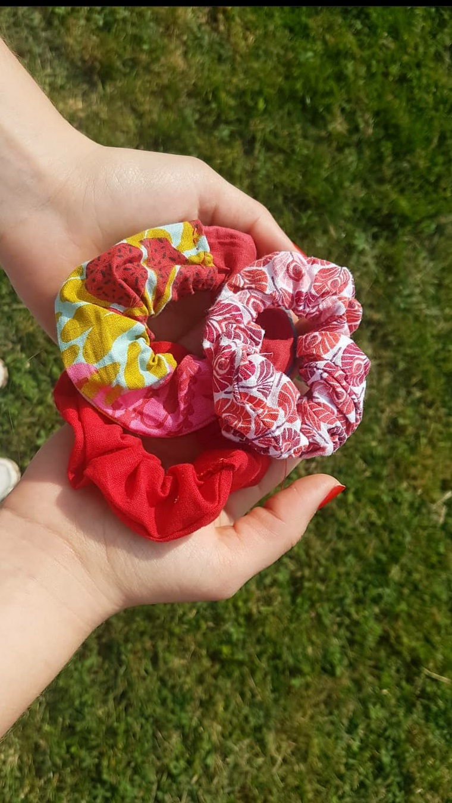
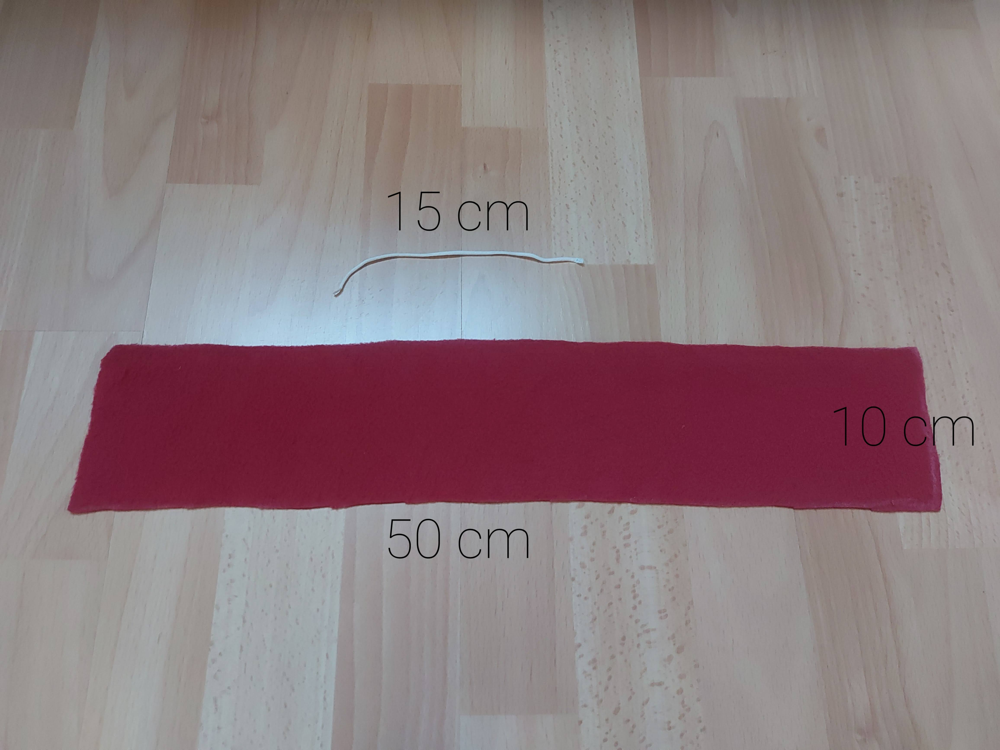
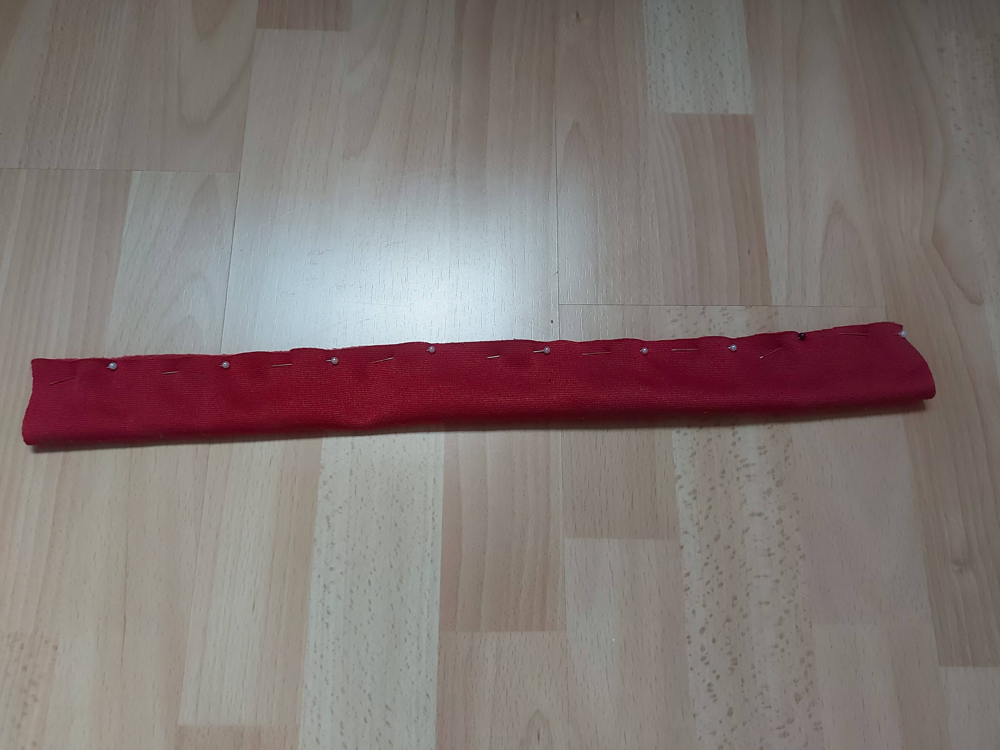
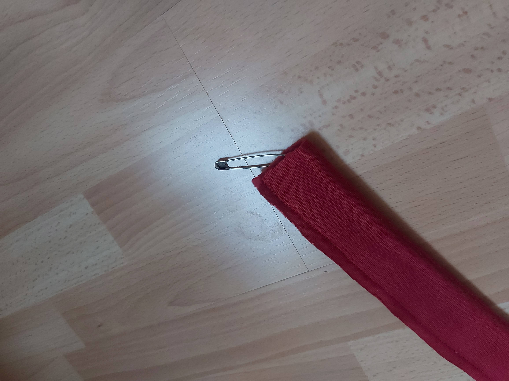
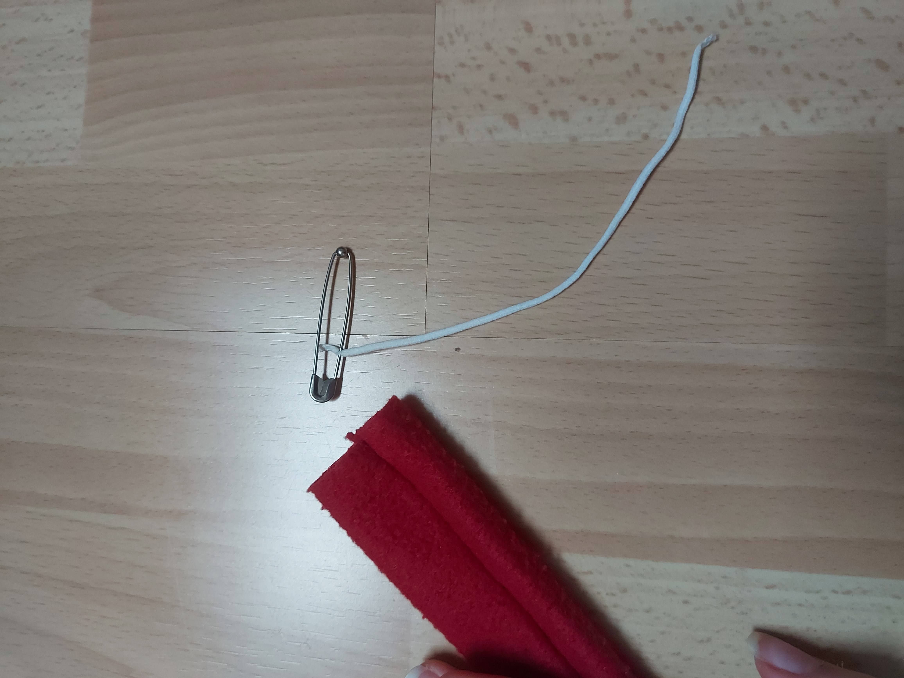
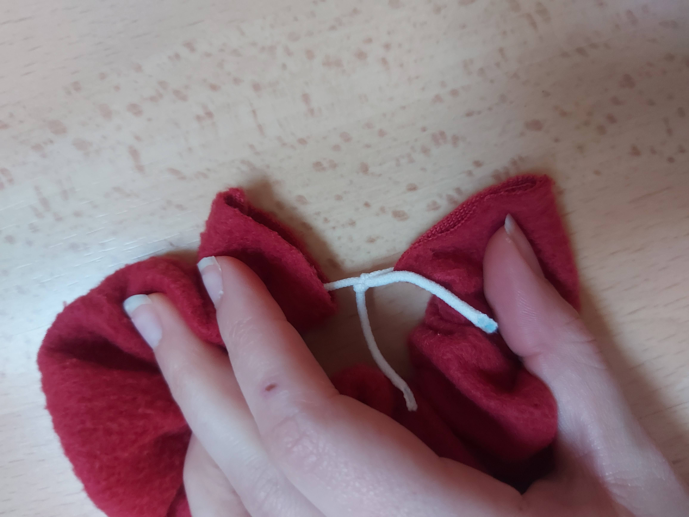
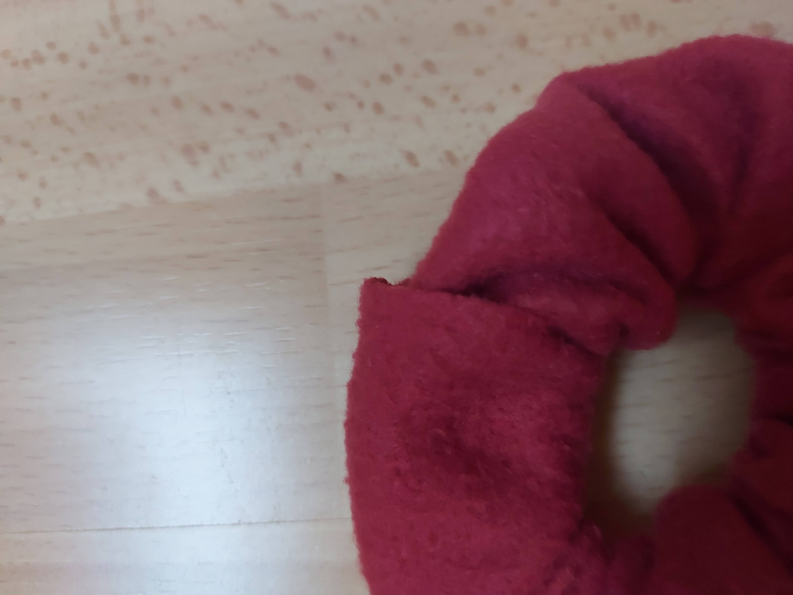
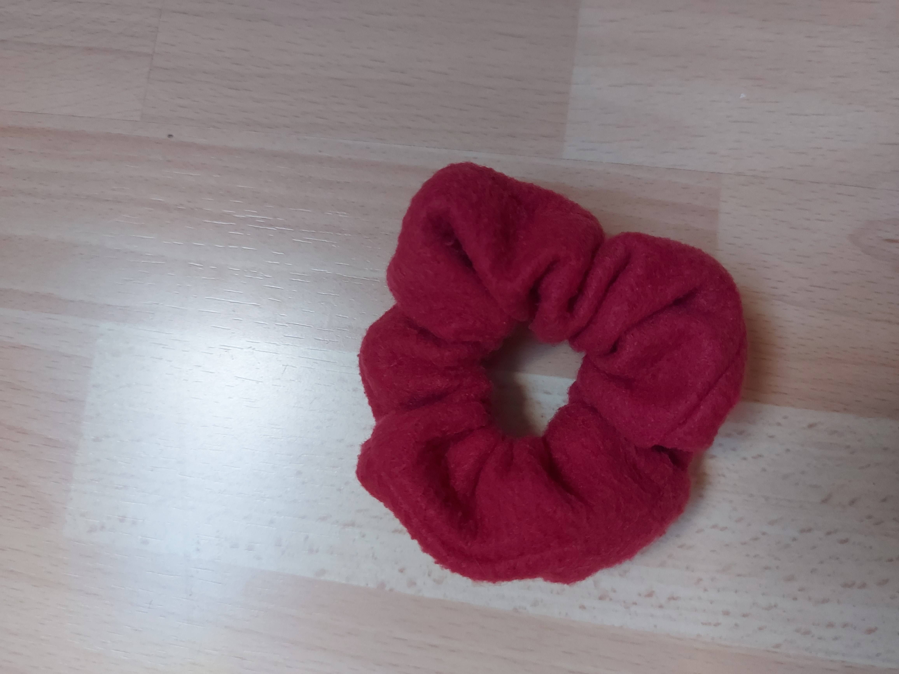

Besoin d'un chouchou pour attacher vos cheveux. Ce tuto est fait pour vous!


Matériel nécessaire :

Etape 1:
Plier le tissue en deux, endroit contre endroit. Coudre au point droit sur toute la longuer le coté oppose à la pliure.

Etape 2:
retourné le tissue a l'aide d'une epingle a nourrice. On se retrouve avec un tube.

Etape 3:
Faire passer l'elastique à l'interieur du tube.

Etape 4:
Nouer les deux extremités de l'élastique ensemble.

Etape 5:
Ramenez les extremités du tissue ensemble et rentrer les l'une dans l'autre.Prenez votre aiguilles et fermez le "trou" en cousant a la main. Vous pouvez aussi le faire a la machine mais le résultat est moins beau.

Etape 6:
Et ... c'est fini !!!